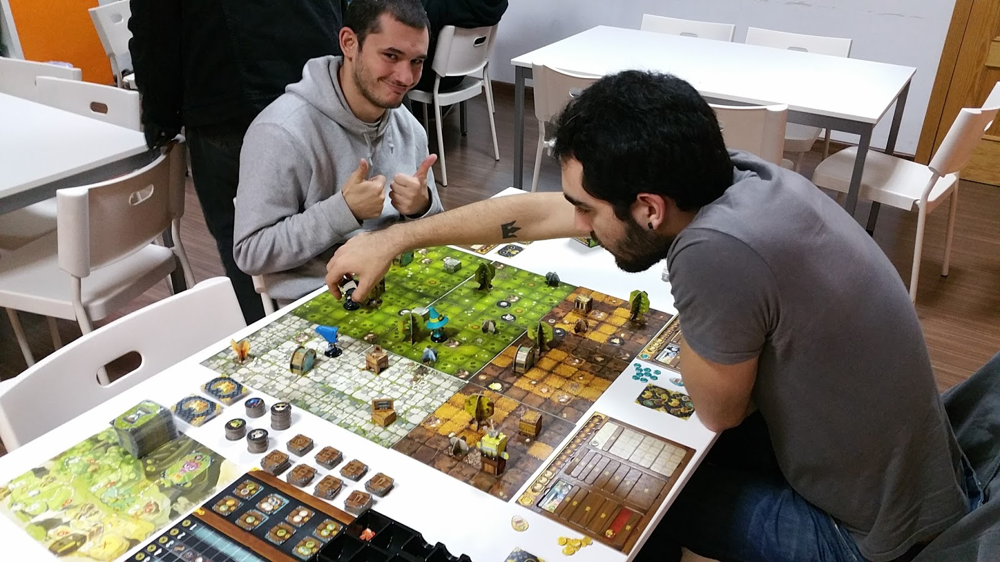

Nuestra historia
TdR nace en el 2013 cuando un grupo de amigos decide compartir sus aventuras roleras a través de un blog y una modesta cuenta de Twitter . En la actualidad, el proyecto ha crecido hasta convertirse en un servidor donde cualquiera puede reunir un grupo de juego y pasar un buen rato.
Nuestros Objetivos
- Promoción del rol
- Facilitar que la gente pueda disfrutar del hobby
- Ayuda para novatos
- Todos hemos empezado
- Compartir las aventuras
- Si nosotros las disfrutaamos, vosotros también
- Generar espacios seguros
- El respeto y la tolerancia son fundamentales para que todos estemos cómodos